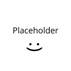

| Membro | Área | Responsabilidade |
|---|---|---|
|
|
Filtros e processamento de dados | Classificação, organização e filtragem dos asteroides apresentados pelo sistema. |
| Autenticação e favoritos | Sistema de login, autenticação dos usuários e gerenciamento dos asteroides adicionados aos favoritos. | |
|
 |
Frontend e JavaFX | Desenvolvimento da interface gráfica utilizando JavaFX, FXML, CSS e Scene Builder. |
| Modelagem e banco de dados | Classes de domínio, atributos dos asteroides, estrutura dos dados, banco de dados, JDBC e persistência. | |
|
|
Backend e integração com a NASA API | Comunicação com a API da NASA, requisições HTTP, processamento das respostas JSON e integração dos dados externos com o sistema. |